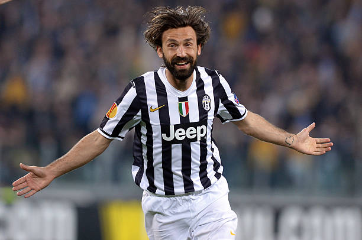
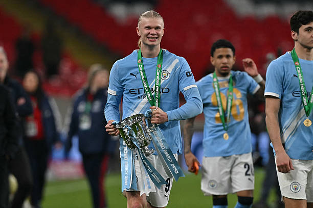
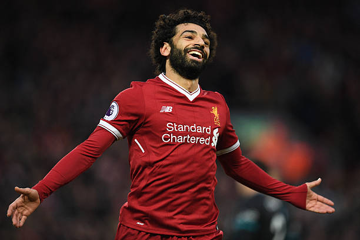
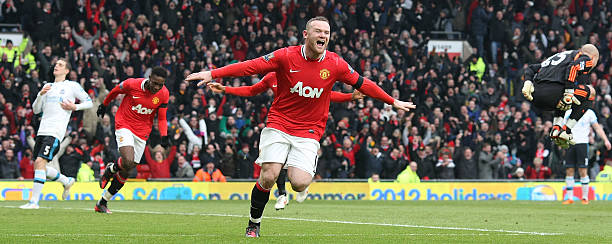
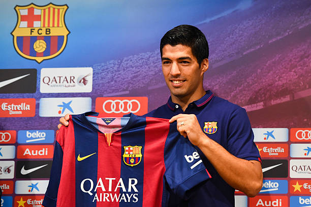
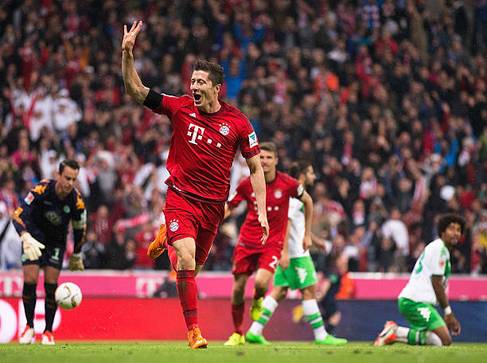
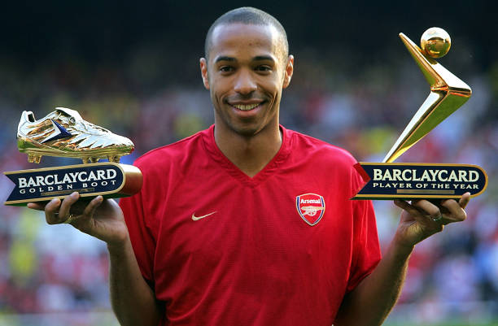
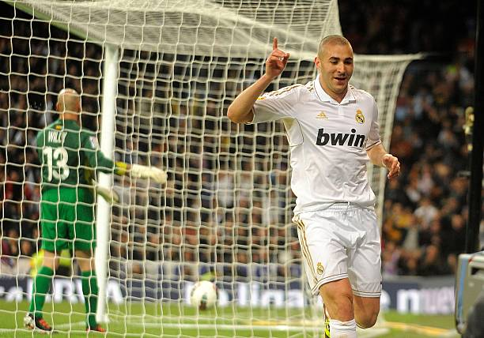
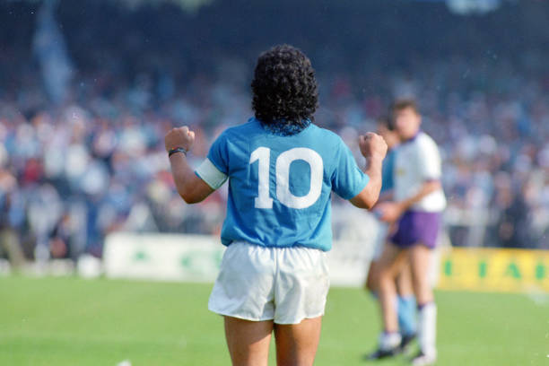
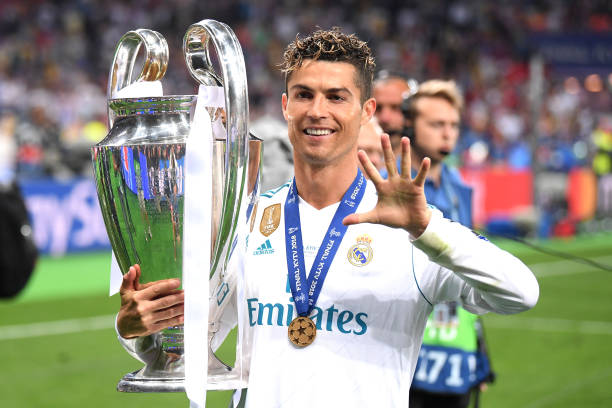

© Juventus FC / Getty Images
Setelah dianggap sudah habis oleh AC Milan, Andrea Pirlo pindah ke Juventus secara gratis (Free Transfer) pada Juli 2011. Kepindahan ini menjadi salah satu penyesalan terbesar Milan dan keuntungan luar biasa bagi Juventus. Pirlo langsung didapuk menjadi jenderal lini tengah dalam taktik Antonio Conte, mengubah Juventus yang sebelumnya finis di peringkat ke-7 menjadi tim yang tak terkalahkan sepanjang musim. Momen ikonik terbaiknya adalah umpan-umpan vertikalnya yang membelah pertahanan lawan, gol tendangan bebas jarak jauh yang magis, serta ketenangannya mendikte permainan yang mengawali era dominasi absolut Juventus di Italia.
Fakta Menarik: Di luar sepak bola pirlo adalah seorang penikmat dan pebisnis anggur. Ia memiliki kebun anggur sendiri di italia yang mampu memproduksi belasan ribu botol setiap tahunnya.
Kesuksesan & Prestasi
Kesuksesan Klub: 4x Serie A, 1x Coppa Italia, 2x Supercoppa Italiana.
Kesuksesan Individu: 3x Serie A Footballer of the Year (2012, 2013, 2014), 1x Masuk UEFA Team of the Year 2012, serta menjadi arsitek kebangkitan era modern Juventus.

© Manchester City / Getty Images
Manchester City mengaktifkan klausul rilis Erling Haaland pada Juli 2022 dengan membayar £51,2 juta (€60 juta) ke Dortmund, sebuah harga yang terhitung murah untuk penyerang kelas dunia. Haaland langsung menjadi kepingan taktik terakhir yang dicari oleh Pep Guardiola untuk mendominasi Eropa. Ia menghancurkan rekor-rekor gol di musim pertamanya dan memberikan dampak instan pada ketajaman lini serang City. Momen ikonik utamanya adalah mencetak 5 gol dalam satu laga UCL melawan RB Leipzig, serta gol-gol krusial di liga yang memastikan City menyalip Arsenal untuk mengunci gelar juara domestik dan Eropa.
Fakta Menarik: Pada usia 16 tahun, ia pernah bergabung dalam grup rap bernama Flow Kingz dan merilis lagu berjudul "kygo jo" di youtube.
Kesuksesan & Prestasi
Kesuksesan Klub: 2x Premier League, 1x Liga Champions, 1x FA Cup, 1x Piala Super Eropa, 1x Piala Dunia Antarklub (Termasuk 1x Treble Winner 2023).
Kesuksesan Individu: Memecahkan rekor gol terbanyak Premier League dalam satu musim (36 gol), 1x Sepatu Emas Eropa, 1x Gerd Müller Trophy 2023, 1x Top Skor Liga Champions.

© Liverpool FC / Getty Images
Pada Juni 2017, Liverpool mendatangkan Mohamed Salah dengan biaya £36,5 juta yang awalnya sempat diragukan karena kegagalannya di Chelsea dulu. Namun, Salah langsung membungkam kritik dengan mencetak rekor gol luar biasa di musim debutnya. Ia menjadi pilar paling penting dalam taktik gegenpressing Jurgen Klopp yang mengembalikan Liverpool ke peta kekuatan dunia. Momen ikonik terbaiknya meliputi gol solo menawan melawan Manchester City dan Chelsea di Anfield, serta gol penalti cepat di Final Liga Champions 2019 yang menebus kegagalan tahun sebelumnya sekaligus mengunci gelar juara Eropa keenam Liverpool.
Fakta Menarik: semasa remaja, ia harus menempuh perjalanan tiga jam naik beberapa kali bus demi mengikuti latihan sepak bola setiap hari.
Kesuksesan & Prestasi
Kesuksesan Klub: 1x Premier League (Mengakhiri puasa gelar 30 tahun), 1x Liga Champions, 1x FA Cup, 2x Piala Liga, 1x Piala Dunia Antarklub, 1x Piala Super Eropa.
Kesuksesan Individu: 3x Golden Boot Premier League (Top Skor), 2x PFA Players' Player of the Year (2018, 2022), 2x FWA Footballer of the Year (2018, 2022), Rekor gol terbanyak dalam satu musim debut format 38 laga Premier League.

© Manchester United / Getty Images
Manchester United mendatangkan Wayne Rooney yang masih berusia 18 tahun dari Everton pada Agustus 2004 dengan biaya fantastis untuk seorang remaja sebesar £25,6 juta. Rooney langsung membuktikan bakat emasnya sejak hari pertama. Di bawah asuhan Sir Alex Ferguson, ia berevolusi dari penyerang muda yang agresif menjadi pemain serba bisa yang rela bermain di posisi mana pun demi kemenangan tim. Momen ikonik yang tidak akan pernah dilupakan adalah hat-trick sensasional di laga debutnya melawan Fenerbahce di UCL, serta gol salto legendaris ke gawang Manchester City pada tahun 2011 yang dinobatkan sebagai salah satu gol terbaik sepanjang sejarah Premier League.
Fakta Menarik: menjadi pemain termuda yang membela dan mencetak gol untuk inggris di usia 17 tahun pada 2003.
Kesuksesan & Prestasi
Kesuksesan Klub: 5x Premier League, 1x Liga Champions, 1x Europa League, 1x FA Cup, 3x Piala Liga, 1x Piala Dunia Antarklub.
Kesuksesan Individu: 253 gol (Top skor sepanjang masa Manchester United), 1x PFA Players' Player of the Year 2010, 1x FWA Footballer of the Year 2010.

© FC Barcelona / Getty Images
Barcelona menebus Luis Suárez dari Liverpool pada Juli 2014 dengan mahar £65 juta (€75 juta) meskipun sang pemain sedang menjalani sanksi larangan bermain akibat insiden di Piala Dunia. Setelah sanksinya berakhir, Suárez langsung beradaptasi dengan luar biasa dan membentuk kemitraan legendaris "MSN" bersama Lionel Messi dan Neymar. Ia menjadi penyerang tengah nomor 9 yang sempurna, memberikan kekuatan fisik dan ketajaman di lini depan. Momen ikonik utamanya adalah mencetak gol krusial di Final Liga Champions 2015 melawan Juventus untuk mengunci status Treble Winner, serta mencetak hat-trick di laga penentu gelar La Liga melawan Granada pada 2016.
Fakta Menarik: Suarez menjadi satu-satunya pemain yang berhasil merebut gelar top skorer La Liga di tengah era kejayaan Ronaldo-Messi.
Kesuksesan & Prestasi
Kesuksesan Klub: 4x La Liga, 1x Liga Champions, 4x Copa del Rey, 1x Piala Super Eropa, 1x Piala Dunia Antarklub (Termasuk 1x Treble Winner 2015).
Kesuksesan Individu: 198 gol dari 283 laga (Top skor sepanjang masa ke-3 Barcelona), 1x Sepatu Emas Eropa (2016), 1x Pichichi Trophy (Mematahkan dominasi Messi-Ronaldo).

© FC Bayern München / Getty Images
Salah satu bisnis transfer terbaik sepanjang masa terjadi pada Juli 2014 ketika Bayern Munchen mendapatkan Robert Lewandowski secara gratis (Free Transfer) setelah kontraknya di Dortmund habis. Di Allianz Arena, Lewandowski langsung menjadi mesin gol yang sangat konsisten dari musim ke musim. Ia menjadi tumpuan Bayern dalam mendominasi sepak bola Jerman dan Eropa. Momen ikonik yang mengguncang dunia adalah saat ia mencetak 5 gol hanya dalam waktu 9 menit setelah masuk sebagai pemain pengganti melawan Wolfsburg pada 2015, serta keberhasilannya menyamai dan melewati rekor gol satu musim legendaris Gerd Muller.
Fakta Menarik: saat debut bersama timnas Polandia pada 2008, ia sempat dimainkan sebagai bek dan mencetak satu gol sebelum bertransformasi menjadi mesin gol.
Kesuksesan & Prestasi
Kesuksesan Klub: 8x Bundesliga (beruntun), 1x Liga Champions, 3x DFB-Pokal, 4x DFL-Supercup, 1x Piala Super Eropa, 1x Piala Dunia Antarklub (Sextuple 2020).
Kesuksesan Individu: 344 gol dari 375 laga, 2x FIFA Best Men's Player (2020, 2021), 1x UEFA Men's Player of the Year 2020, 7x Kicker Torjägerkanone (Top Skor Bundesliga), Rekor 41 gol dalam satu musim Bundesliga.

© Arsenal FC / Getty Images
Arsene Wenger menyelamatkan karier Thierry Henry yang meredup di Juventus pada Agustus 1999 dengan mahar £11 juta. Di Arsenal, Wenger mengubah posisi Henry dari seorang pemain sayap murni menjadi penyerang tengah yang mematikan. Henry berkembang menjadi striker paling ditakuti di Premier League dengan kombinasi kecepatan, teknik, dan penyelesaian akhir yang elegan. Momen ikonik yang paling diingat adalah gol solorun indahnya yang melewati seluruh pertahanan Tottenham Hotspur pada 2002, serta kepemimpinannya saat membawa Arsenal mencetak sejarah menjadi juara liga tanpa terkalahkan (The Invincibles) pada musim 2003/2004.
Fakta Menarik: penyerang terhebat arsenal dan pencetak gol terbanyak sepanjang masa klub tersebut dengan 228 gol.
Kesuksesan & Prestasi
Kesuksesan Klub: 2x Premier League, 2x FA Cup, 2x Community Shield.
Kesuksesan Individu: 228 gol (Top skor sepanjang masa Arsenal), 4x Golden Boot Premier League, 2x PFA Players' Player of the Year, 3x FWA Footballer of the Year.

© Real Madrid CF / Getty Images
Real Madrid mendatangkan Karim Benzema dari Lyon pada Juli 2009 dengan biaya €35 juta. Di awal kedatangannya, Benzema harus rela bermain di bawah bayang-bayang Cristiano Ronaldo dan sering mengorbankan ketajamannya demi membuka ruang bagi rekan-rekannya. Perjalanan kariernya berubah drastis setelah Ronaldo pergi pada 2018; Benzema bertransformasi menjadi pemimpin lini serang sekaligus kapten tim. Momen ikonik puncaknya terjadi pada musim 2021/2022, di mana ia mencetak hat-trick berturut-turut ke gawang PSG dan Chelsea di fase gugur Liga Champions, serta gol kemenangan dramatis melawan Manchester City yang menggendong Madrid ke tangga juara.
Fakta Menarik: Meraih penghargaan pemain terbaik dunia berkat performa luar biasa membawa Real Madrid juara Liga Champions dan La Liga.
Kesuksesan & Prestasi
Kesuksesan Klub: 5x Liga Champions, 4x La Liga, 3x Copa del Rey, 4x Piala Super Spanyol, 4x Piala Super Eropa, 5x Piala Dunia Antarklub (Total 25 trofi).
Kesuksesan Individu: 354 gol (Top skor sepanjang masa ke-2 klub), 1x Ballon d'Or 2022, 1x UEFA Men's Player of the Year 2022, 1x Pichichi Trophy (Top Skor La Liga).

© SSC Napoli / Getty Images
Napoli mengejutkan dunia pada Juli 1984 dengan mendatangkan Diego Maradona lewat mahar £6,9 juta (€12 juta) yang menjadi rekor dunia saat itu. Napoli yang kala itu merupakan klub semenjana dari wilayah selatan Italia yang miskin, langsung berubah menjadi kekuatan baru yang ditakuti. Maradona memikul beban tim sendirian dan berhasil mendobrak dominasi klub-klub kaya utara seperti Juventus dan AC Milan. Momen ikonik paling bersejarahnya adalah ketika ia mencetak gol-gol krusial yang memastikan gelar juara liga pertama Napoli pada 1987, yang memicu perayaan liar di seluruh kota Naples, serta performa magisnya di kompetisi Eropa saat menjuarai UEFA Cup 1989.
Fakta Menarik: Tumbuh di lingkungan sangat miskin di pinggiran Buenos Aires dan mulai mahir mengolah bola di jalanan berlumpur
Kesuksesan & Prestasi
Kesuksesan Klub: 2x Serie A, 1x Coppa Italia, 1x UEFA Cup, 1x Supercoppa Italiana.
Kesuksesan Individu: Menjadi ikon abadi klub, nomor punggung 10 dipensiunkan, dan mendapat status dewa sepak bola di Naples.

© Real Madrid CF / Getty Images
Pada Juli 2009, Real Madrid memecahkan rekor transfer dunia dengan menebus Cristiano Ronaldo seharga £80 juta (€94 juta). Kepindahannya menandai era baru persaingan sepak bola modern. Ronaldo langsung bertransformasi menjadi mesin gol yang menakutkan dan menjadi ujung tombak utama Madrid untuk meruntuhkan dominasi Barcelona era Pep Guardiola. Selama 9 musim di Santiago Bernabeu, ia menunjukkan konsistensi luar biasa dengan mencetak lebih banyak gol daripada jumlah penampilannya. Momen ikonik terbaiknya termasuk gol sundulan terbang melawan Manchester United di UCL, salto spektakuler di markas Juventus pada 2018, serta hat-trick legendaris di fase gugur Liga Champions yang membawa Madrid meraih Three-peat (juara 3 kali beruntun).
Fakta Menarik: Untuk menghormati sang legenda, Bandara Internasional Madeira di Portugal resmi berganti nama menjadi Bandara Cristiano Ronaldo
Kesuksesan & Prestasi
Kesuksesan Klub: 4x Liga Champions, 2x La Liga, 2x Copa del Rey, 2x Piala Super Eropa, 2x Piala Super Spanyol, 3x Piala Dunia Antarklub.
Kesuksesan Individu: 450 gol dari 438 laga (Top skor sepanjang masa klub), 4x Ballon d'Or (di Madrid), 3x Sepatu Emas Eropa, 7x Top Skor Liga Champions.